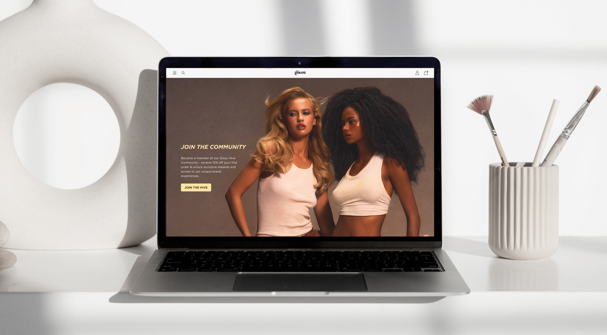
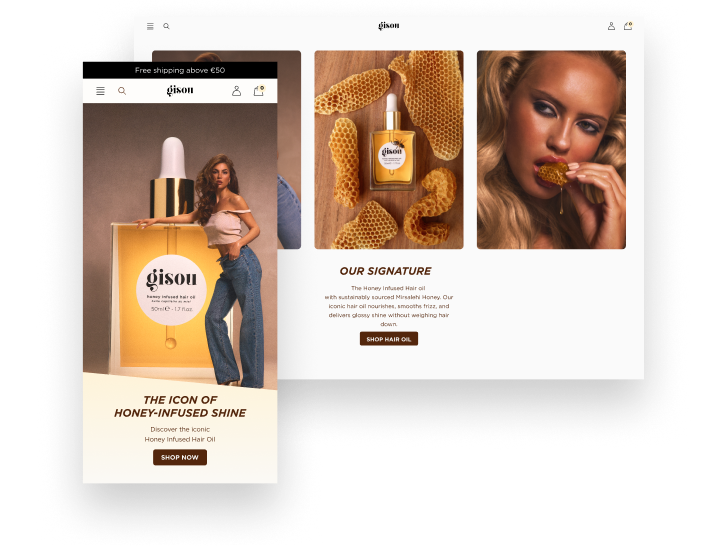
GISOU Digital Design Concept
- Role
- UX/UI Design, Visual Design, Responsive Design, CRM
- Tools
- Figma
"The Icon of Honey Glow" is a premium e-commerce campaign concept created for Gisou, centered around the Honey Infused Hair Oil as the brand's iconic hero product.
The project explored how editorial storytelling, luxury beauty aesthetics, and conversion-focused digital design could be combined into a cohesive cross-channel campaign experience across desktop, mobile, and CRM touchpoints.
The homepage was structured as a narrative journey, moving from emotional campaign storytelling toward product discovery, ritual-based merchandising, and community-focused conversion moments. Inspired by Gisou's honey-infused identity and Mirsalehi heritage, the visual direction focused on warm neutral tones, spacious layouts, strong hierarchy, and premium editorial imagery.
Alongside the responsive landing page, a complementary CRM email concept was developed to extend the campaign into a realistic luxury beauty e-commerce ecosystem.
This project allowed me to explore the intersection between branding, responsive UX/UI design, digital merchandising, and campaign storytelling within a commercial e-commerce context.

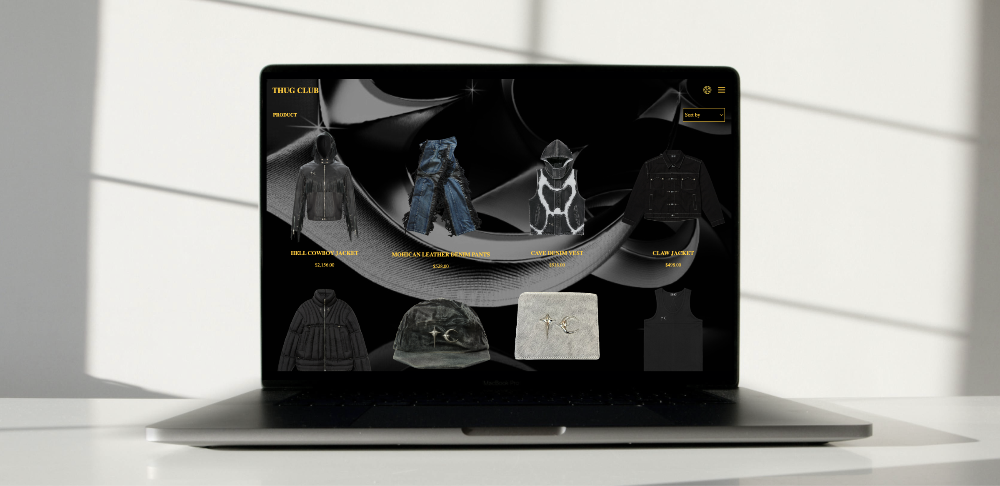
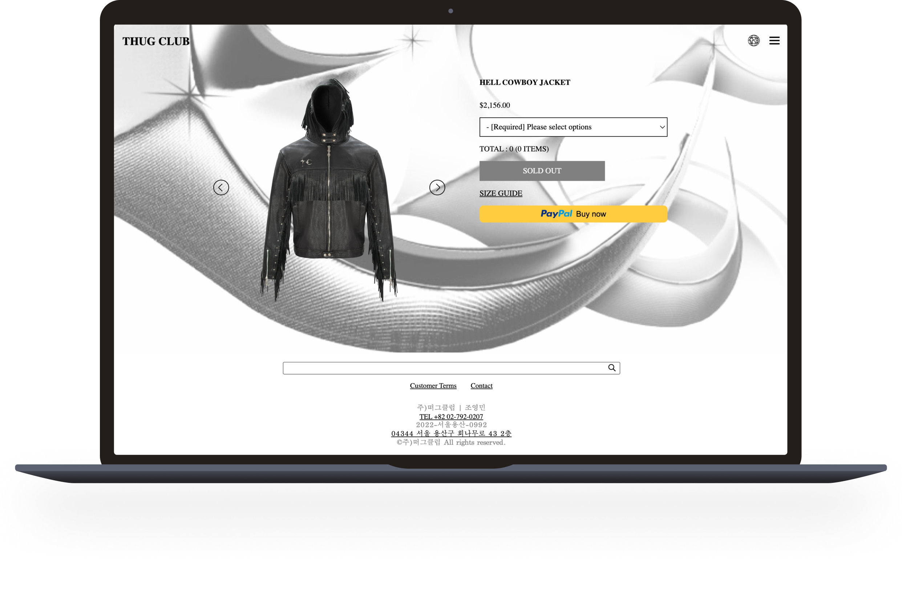
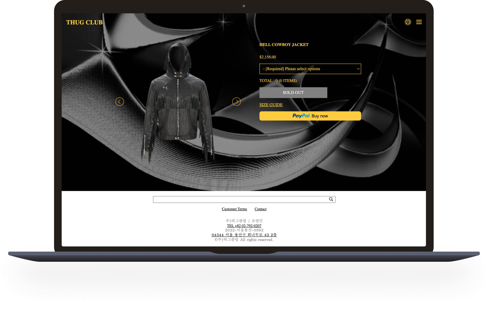
Thug Club Front-end Development
- Role
- Front-end development and accessibility improvements
- Tools
- HTML, CSS, JavaScript
A responsive HTML, CSS, and JavaScript re-designed website developed in VSCode, incorporating research-backed accessibility improvements, including screenreader support.
Features include dark and light mode options, enhanced readability, and clean, maintainable code structure.
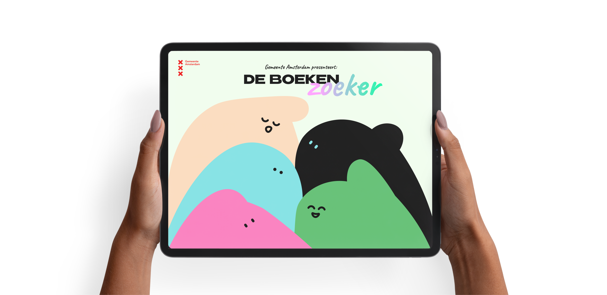
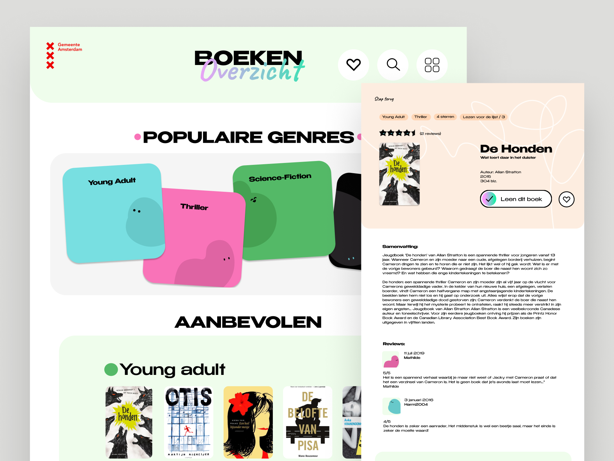
Visual Interface Design
- Role
- Visual interface design
- Tools
- Figma
"De BoekenZoeker" for Municipality Amsterdam presents a visual user interface on an iPad, designed for high school students that allow them to easily browse and find interesting books to read in the school library.
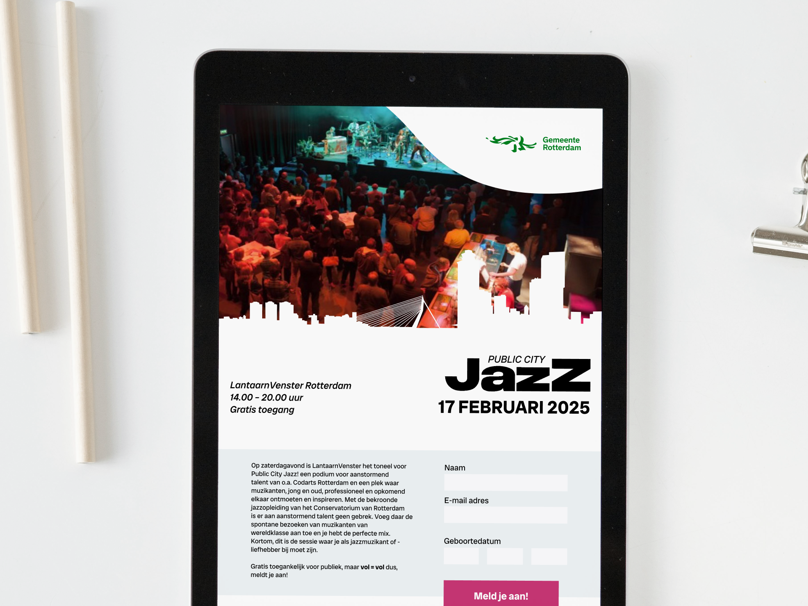
Public City Jazz
- Role
- Visual interface responsiveness
- Tools
- Figma
- Format
- Tablet, iPhone, desktop
A responsive event platform for Public City Jazz, following the visual identity of the Municipality of Rotterdam. The focus was on layout, hierarchy, and translating the energy of jazz into a clear and structured interface across multiple screen sizes.
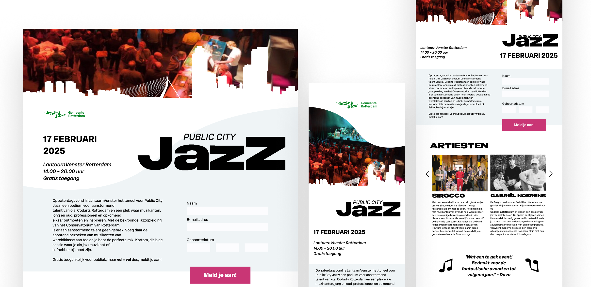
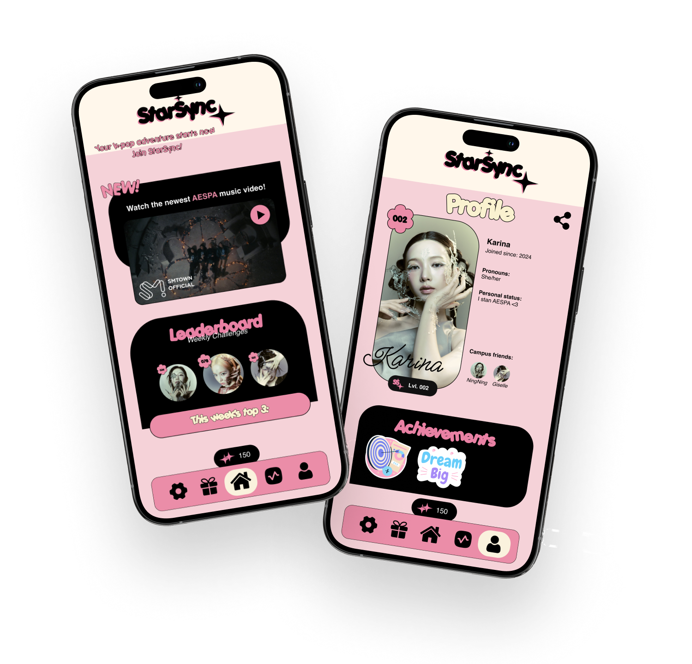
StarSync Community Application
- Role
- Visual interface design
- Tools
- Figma
A community app concept that co-creates a community within Communication and Multimedia Design students, celebrating individuality within the collective.
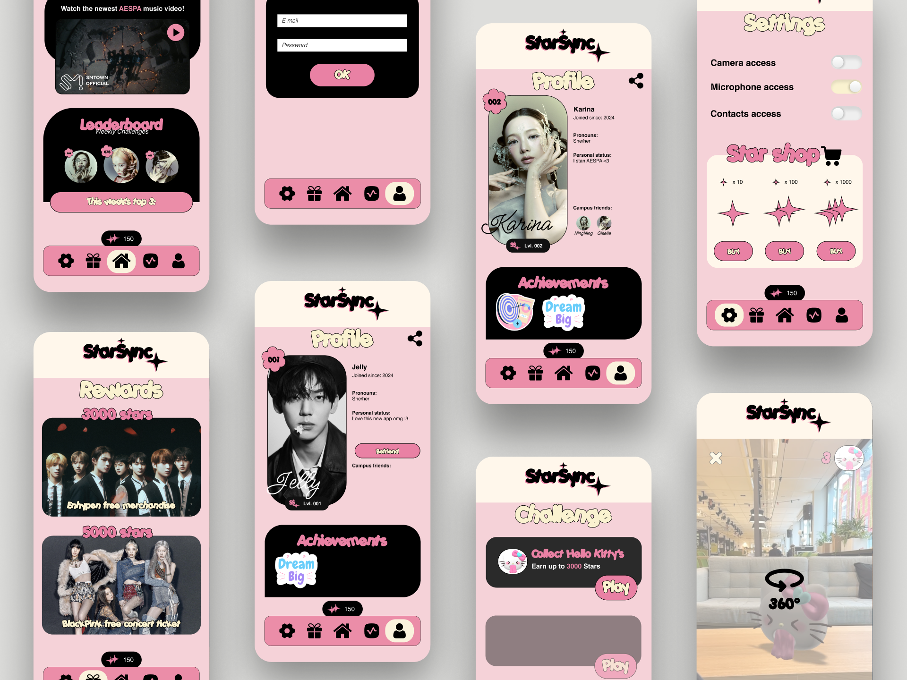
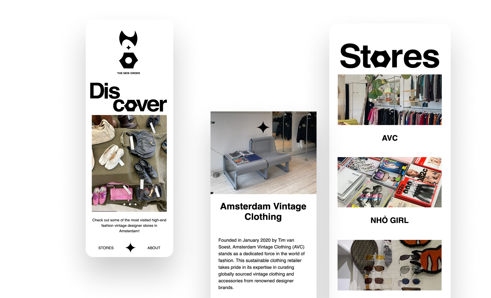
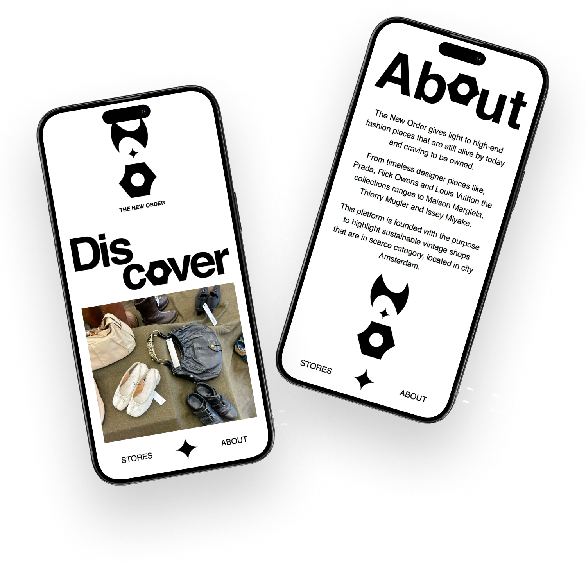
The New Order
- Role
- Front-end development and visual design
- Tools
- HTML/CSS, Adobe Creative Suite
The first HTML/CSS website with motives of sharing local high-end-vintage shops located in Amsterdam
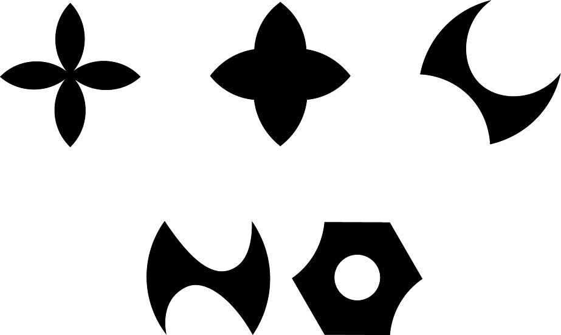